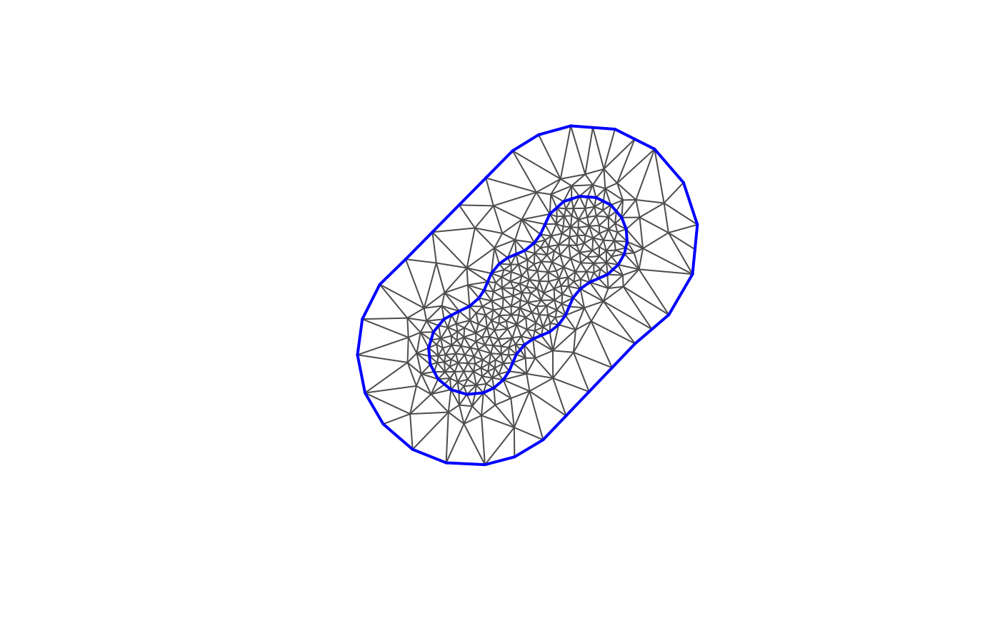

Constructs a potentially nonconvex extension of a spatial object by
performing dilation by convex + concave followed by
erosion by concave. This is equivalent to dilation by convex followed
by closing (dilation + erosion) by concave.
Usage
fm_nonconvex_hull(x, ...)
# S3 method for sfc
fm_nonconvex_hull(
x,
convex = -0.15,
concave = convex,
preserveTopology = TRUE,
dTolerance = NULL,
crs = fm_crs(x),
...
)
fm_extensions(x, convex = -0.15, concave = convex, dTolerance = NULL, ...)
# S3 method for matrix
fm_nonconvex_hull(x, ...)
# S3 method for sf
fm_nonconvex_hull(x, ...)
# S3 method for Spatial
fm_nonconvex_hull(x, ...)
# S3 method for sfg
fm_nonconvex_hull(x, ...)Arguments
- x
A spatial object
- ...
Arguments passed on to the
fm_nonconvex_hull()sub-methods- convex
numeric vector; How much to extend
- concave
numeric vector; The minimum allowed reentrant curvature. Default equal to
convex- preserveTopology
logical; argument to
sf::st_simplify()- dTolerance
If not zero, controls the
dToleranceargument tosf::st_simplify(). The default ispmin(convex, concave) / 40, chosen to give approximately 4 or more subsegments per circular quadrant.- crs
Options crs object for the resulting polygon
Value
fm_nonconvex_hull() returns an extended object as an sfc
polygon object (regardless of the x class).
fm_extensions() returns a list of sfc objects.
Details
Morphological dilation by convex, followed by closing by
concave, with minimum concave curvature radius concave. If
the dilated set has no gaps of width between $$2 \textrm{convex} (\sqrt{1+2
\textrm{concave}/\textrm{convex}} - 1)$$
and \(2\textrm{concave}\), then the minimum convex curvature radius is
convex.
The implementation is based on the identity $$\textrm{dilation}(a) \& \textrm{closing}(b) = \textrm{dilation}(a+b) \& \textrm{erosion}(b)$$ where all operations are with respect to disks with the specified radii.
When convex, concave, or dTolerance are negative,
fm_diameter * abs(...) is used instead.
Differs from sf::st_buffer(x, convex) followed by
sf::st_concave_hull() (available from GEOS 3.11)
in how the amount of allowed concavity is controlled.
Functions
fm_nonconvex_hull(): Basic nonconvex hull method.fm_extensions(): Constructs a potentially nonconvex extension of a spatial object by performing dilation byconvex + concavefollowed by erosion byconcave. This is equivalent to dilation byconvexfollowed by closing (dilation + erosion) byconcave.
INLA compatibility
For mesh and curve creation, the fm_rcdt_2d_inla(), fm_mesh_2d_inla(),
and fm_nonconvex_hull_inla() methods will keep the interface syntax used by
INLA::inla.mesh.create(), INLA::inla.mesh.2d(), and
INLA::inla.nonconvex.hull() functions, respectively, whereas the
fm_rcdt_2d(), fm_mesh_2d(), and fm_nonconvex_hull() interfaces may be
different, and potentially change in the future.
Examples
inp <- matrix(rnorm(20), 10, 2)
out <- fm_nonconvex_hull(inp, convex = 1)
plot(out)
points(inp, pch = 20)
if (TRUE) {
inp <- sf::st_as_sf(as.data.frame(matrix(1:6, 3, 2)), coords = 1:2)
bnd <- fm_extensions(inp, convex = c(0.75, 2))
plot(fm_mesh_2d(boundary = bnd, max.edge = c(0.25, 1)), asp = 1)
}
